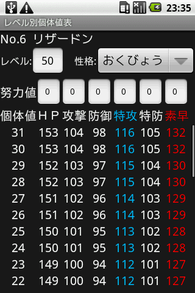
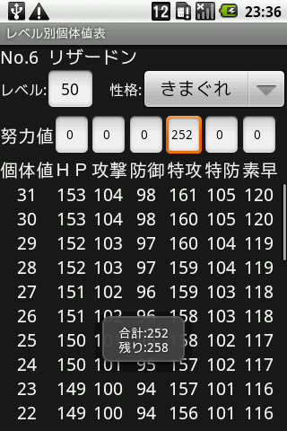
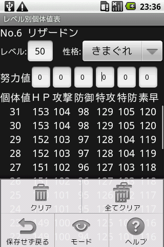
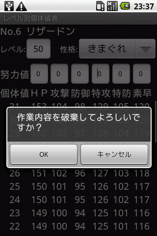

ポケモンの個体値(0～31)をレベルごとに表形式で表示する画面です。性格・努力値を設定することでステータスの実値を確認することができます。
ポケモンのレベルを設定することができます。値は1～100までで、空欄にした場合は1が、101以上の値を指定した場合は自動で100が設定されます。※値の自動設定はIMEキーボードのエンターキーまたはフォーカスの移動時に設定されます。
ポケモンの性格を指定することが出来ます。性格については性格一覧を参照してください。また上昇補正がかかるステータスは赤色に、下降補正がかかるステータスは青色で表示されます。
各ステータスの努力値を設定することができます。値は0～255までで、空欄にした場合は0が、256以上の値を指定した場合は自動で252が設定されます。また値を設定後画面下部に小時間、合計努力値と振れる残り努力値が表示されます。
この画面の終了時(バックキーやホームキーなど)に入力したレベル・性格・努力値は保持されます。
メニューからクリア、全てクリア、保存せず戻る、他画面への切り替え、ヘルプが行えます。
現在表示しているポケモンのレベル・性格・努力値をリセット、及び保存内容を破棄します。
現在表示しているポケモンのレベル・性格・努力値をリセット、及び全てのポケモンの保存内容を破棄します。
本来自動保存される内容を保存せずにこの画面を終了します。
